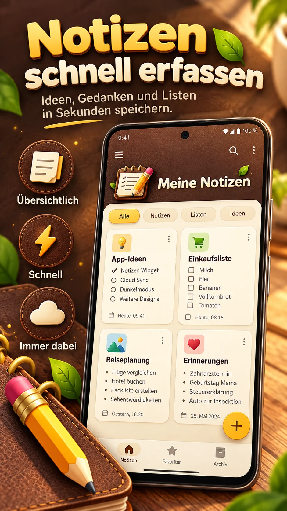
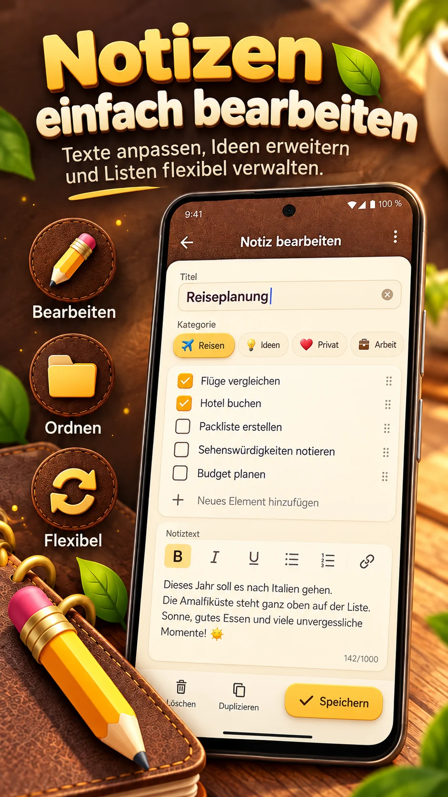
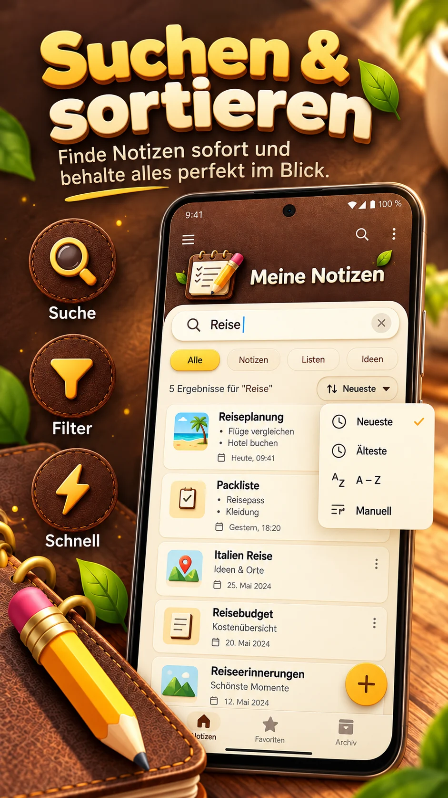
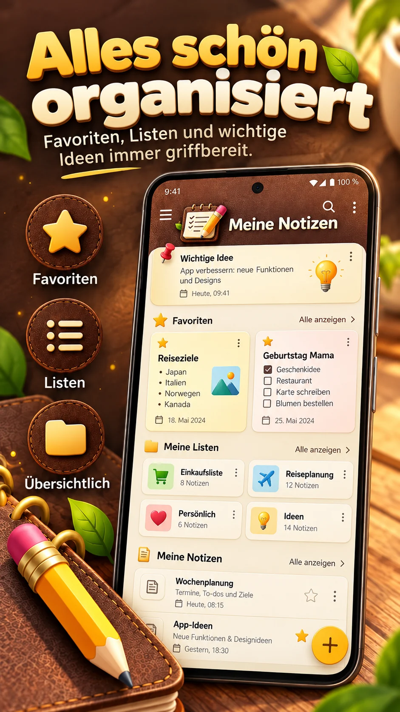

Notes & checklists
Capture thoughts, tick off tasks, and combine regular text with a checklist in one note.
Capture thoughts, check off lists, and organize plans – with the warmth of leather and paper. Fast, thoughtfully designed, and in your hands.
Free to use · Contains ads and optional in-app purchase

From quick thoughts to long-term plans, My Notes keeps things organized and feels great to use.
Capture thoughts, tick off tasks, and combine regular text with a checklist in one note.
Search titles, contents and checklist items. Filter by category and sort your way.
Rearrange cards freely – even in grid view. Your chosen order is remembered.
Give ideas, travel, work and everyday life their own space with icons, colors and favorites.
Archive important notes and restore accidentally deleted items from trash.
Back up notes locally as JSON, import backups or share contents as text.
A glimpse into your everyday note-taking. Select an image to enlarge it.



These are designed product previews. Actual screens may differ depending on your device and app version.
Warm brown tones, fine stitching, cream-colored cards and subtle leaf-green accents – inspired by a notebook you love to open.
Try the color variations:
No. You can use My Notes without signing up for an app account. Notes are stored locally on your device.
You can create, edit and organize notes and lists offline. Internet access may be needed for advertising and purchase verification.
Use local JSON export and import to create a backup and restore it later. Keep backup files somewhere safe.
There is a one-time purchase to remove advertising, not a subscription. Google Play displays the current price in the app.
Deleted notes first go to trash and can be restored. According to version 2.1, they are permanently removed after 30 days.
A thought, a checklist, a new plan – it all starts with a note.
Get it on Google Play